rxy_demo.RmdIntroduction
The rxy package provides tools for analyzing correlations between a dependent variable and multiple independent variables. It also includes methods for printing, plotting, and summarizing the results.
This vignette demonstrates how to use the package with the Boston dataset from the MASS package.
Getting Started
Install and load the rxy package:
# Install the package (if not already installed)
# devtools::install("path_to_rxy")
library(rxy)Load the MASS package and use the Boston dataset:
Analyze Correlations
Run the ryx function to analyze correlations between the dependent variable (medv) and independent variables:
result <- ryx(Boston, y = "medv")Print the Results
Use the print method to display the correlation results:
print(result)
#> Correlations of medv with
#> variable r p sigif
#> lstat -0.7376627 5.081103e-88 ***
#> rm 0.6953599 2.487229e-74 ***
#> ptratio -0.5077867 1.609509e-34 ***
#> indus -0.4837252 4.900260e-31 ***
#> tax -0.4685359 5.637734e-29 ***
#> nox -0.4273208 7.065042e-24 ***
#> crim -0.3883046 1.173987e-19 ***
#> age -0.3769546 1.569982e-18 ***
#> zn 0.3604453 5.713584e-17 ***
#> black 0.3334608 1.318113e-14 ***
#> dis 0.2499287 1.206612e-08 ***Plot the Results
Plotting the results with the plot method:
plot(result)
Summarize the Results
Summarize the correlations with the summary method:
summary(result)
#> Correlating medv with crim zn indus nox rm age dis tax ptratio black lstat
#> The median absolute correlation was 0.427 with a range from -0.738 to 0.695
#> 11 out of 11 variables were significant at the p < 0.05 level.Conclusion
The rxy package provides an intuitive way to explore relationships between a dependent variable and multiple independent variables. Its print, plot, and summary methods make it easy to interpret the results.